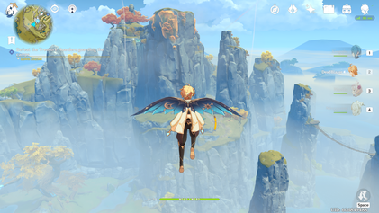
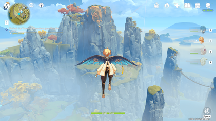

.jpg)
Genshin Impact is an open-world action role-playing game that allows the player to control one of four interchangeable characters in a party. Switching between characters can be done quickly during combat, allowing the player to use several different combinations of skills and attacks. Characters may have their strengths enhanced in various ways, such as increasing a character's level and improving artifacts and the weapons that the character equips. In addition to exploration, the player can attempt various challenges for rewards. Scattered across Teyvat are bosses and challenges that reward highly valuable resources, such as Stormterror and the Electro Hypostasis,
but claiming them uses up a currency called resin, which slowly regenerates over time. Completing these challenges grants the player progress towards increasing their Adventure Rank, which in turn unlocks new quests, challenges, and raises the World Level. The World Level is a measure of how strong the enemies within the world are and the rarity of rewards that defeating them gives. The player can control their character and perform actions such as running, climbing, swimming, and gliding which are limited by stamina. Some characters possess abilities that can alter the environment, such as freezing water to create an ice path that can aid the player in traversing terrain. Many teleportation nodes exist throughout the world that players can warp to as a form of fast travel; among these are landmarks known as Statues of The Seven that can heal and revive characters, and provide benefits such as increasing player stamina. Items such as food and ore may be procured from the open world, while enemies and treasure chests drop other types of resources that may be used in enhancing a character's strength. Players can obtain food from hunting animals, gathering fruit and vegetables, or purchasing them from a store. Furthermore, there are special battle instances called Domains that also reward materials that increase character and weapon strength. Ingredients that can be cooked into meals that regenerate characters' health or boost various stats. Players can also procure ore that can be refined and then used to create weapons or enhance their strength. Each character has two unique combat skills: an Elemental Skill and an Elemental Burst. The Elemental Skill can be used at any time except for the cooldown period immediately after use. In contrast, the Elemental Burst has an energy cost, requiring the user to amass sufficient elemental energy by defeating enemies or inflicting elemental status effects. Characters have control over one of seven natural elements: Cryo, Dendro, Pyro, Hydro, Anemo, Electro and Geo; which correspond to ice, plants, fire, water, wind, electricity, and rock, respectively. These elements can interact in different ways; for example, if a Hydro attack hits a target, the enemy will be inflicted with the "Wet" status effect, and if they are hit with a Cryo attack, it will inflict "Cryo". These two status effects combine into the "Frozen" status effect, temporarily preventing the target from performing any actions or until the player deals enough physical damage to the enemy. Switching between characters during combat and executing those skills allows those elemental
interactions to take place. Certain elemental abilities may be required to solve puzzles within the overworld. A multiplayer mode is available in the form of co-op. Up to 4 players can play together in the overworld and join Domains. Player matching can either be done by requesting to connect with another player. If the player wishes to clear a Domain with other players, they will be automatically matched up with others looking to tackle the same objective. The game features cross-platform play, so players on any platform can play with each other. By completing quests to advance the story, the player can initially unlock four additional playable characters, and more characters can be obtained via a gacha mechanic and in-game events. Several premium in-game currencies, obtainable through in-app purchases and playing the game, can be used to obtain characters and weapons through the gacha system. A pity system guarantees that the player will receive rare items after a set number of draws.
Apple awarded Genshin Impact with "iPhone Game of the Year" in the App Store Best of 2020 and the 2021 Apple Design Awards for Visuals and Graphics. The game also won Google Play's "Best Game of 2020" and was nominated for "Users' Choice Game" at the Best of 2020 awards. At the TapTap Game Awards 2020, the game won "Game of the Year". The game was also nominated for Best RPG and Best Mobile Game at The Game Awards 2020, and for Ultimate Game of the Year at the Golden Joystick Awards. The game was nominated for Best Ongoing Game and won Best Mobile Game at The Game Awards 2021.


.jpg)
Genshin Impact takes place in the world of Teyvat, and is composed of the seven major nations of Mondstadt, Liyue, Inazuma, Sumeru, Fontaine, Natlan, and Snezhnaya; each nation is ruled by a different god. The mysterious floating island of Celestia is allegedly home to gods and mortals who have ascended to godhood through great, heroic feats. Underground lie the ruins of the nation of Khaenri'ah which was destroyed by gods 500 years before the events of the game. Unlike the seven major nations, Khaenri'ah was not ruled over by a god. The player character, the Traveler (male or female depending on the player's choice), is separated from their twin and becomes trapped in Teyvat. They are joined by a companion, Paimon, as they journey through Teyvat in search of their lost sibling. Although players can choose the name they want to be referred by, the Traveler's sibling refers to the Traveler by either Aether or Lumine, if the Traveler is male or female, respectively. Each nation is associated with and worships one of The Seven, a group of gods known as the "Archons", who each preside over one of the seven nations. Each member of The Seven is tied to one of the game's elements, and is also reflected in their nation's aspect. Barbatos, Rex Lapis, the Raiden Shogun, Kusanali, and the Tsaritsa are the Archons of Mondstadt, Liyue, Inazuma, Sumeru, and Snezhnaya, respectively. However, the
god who is the Archon may change over time as Archons pass away. Specific individuals chosen by the Archons are granted a Vision—magical gemstones that give their bearers the ability to command an element and the potential to ascend to godhood and reside in Celestia. Mondstadt, the city of freedom, worships the Anemo Archon Barbatos and sits on an island in the middle of a lake. The city is protected by the Knights of Favonius, who are tasked with protecting Mondstadt and its citizens. To the southwest, Liyue worships the Geo Archon Rex Lapis (also known as Morax) and is the largest market harbor in Teyvat. The harbor city is presided over by the Liyue Qixing, a group of business leaders, and ancient guardians known as Adepti, a class of magical beings that includes Rex Lapis himself. Across the sea to the southeast lies the isolationist island nation of Inazuma, overseen by the authoritarian regime of the Raiden Shogun (also known as Baal) and three governmental bodies that together make up the Tri-Commission: the Tenryou Commission, Kanjou Commission, and Yashiro Commission; overseeing military and executive affairs, finances and foreign affairs, and ceremonial affairs respectively. Snezhnaya, ruled by the Cryo Archon known as the Tsaritsa, sends out diplomats called the Fatui who maintain a friendly appearance while using more underhanded methods secretly. The Fatui are also led by the Eleven Fatui Harbingers, individuals given extraordinary powers and executive authority by the Tsaritsa. In addition to the Fatui, another major antagonistic faction in the game is the Abyss Order, a legion of monsters that declares themselves to be enemies to all of
humanity and the nations of Teyvat. They are led by the "Prince" or "Princess", the lost twin of the Traveler. Each nation takes inspiration from real-life nations and cultures: "Mondstadt" is German for "moon city", and takes inspiration from medieval Western Europe, Liyue (璃月, Jade Moon) is based on China, Inazuma (稲妻, lightning) is based on Japan, Sumeru, named after Mount Meru, takes inspiration from West and South Asia, and Snezhnaya (Снежная, snowy) takes inspiration from Russia.